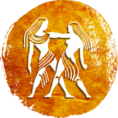

Zodial sign of Gemini

HEALTH :
This year, you will need to pay special attention to your health. Remain careful while driving. Skin diseases may trouble you. You may face some sudden health problems between June and October. This year, pay attention to keeping your immune system strong. The period post October will be good from the health’s perspective. Those who suffer from piles-related problems may need to undergo surgery. Alternative medicines like Ayurvedic treatment might prove especially beneficial for your health.
FINANCIAL CONDITION:
Your financial condition may remain tumultuous this year. At the end of the year, you may invest money in a new house or some other property. Due to the ‘Dhaiyya of Shani’, you may face financially distressing situations at times. You should do sound financial planning because you may have to deal with some big expenses this year. Your daily routine will remain disciplined. After Rahu’s transit in April, you will see a lot of positive changes in your financial condition. You may spend money to purchase jewelry.
FAMILY AND SOCIAL LIFE:
The beginning of the year wouldn’t be good for your family life. The fifth aspect of Rahu might negatively affect your happiness. Sudden expenses may make you irritable. After April, peace and prosperity will increase in your home. There would be better harmony among family members. The marriage of an unmarried family member may get fixed. Between May and June, you may plan the renovation of your house. Your friends will respect you wholeheartedly. Your reputation will increase in society. At the end of the year, you may face some embarrassing situations.
LOVE LIFE:
Your marital relationship will remain normal. Old ideological differences may emerge again. Your life partner may face some health-related problems. Take care of yours as well as your partner’s health. Maintain a respectful distance in the love relationship. You might have disputes with your love partner in February. Respect their feelings. You might face hindrances in your love marriage in the months of September and October. In the first four months, don’t take any important decisions regarding break up or separation; otherwise, the consequences will be very damaging.
EDUCATION AND CARRER :
This year, you will achieve excellent success in higher education. Students who are pursuing an MBA or Aerospace engineering may get a scholarship. You will take a great interest in creative activities. Unemployed people may suddenly get offered a good job. Your dominance will increase at the workplace. But you should watch the activities of your coworkers closely. There are chances of a transfer between April and June. Your income might significantly increase. Between October and December, businesspeople may face impediments in their business expansion projects. Post April, the transit of Rahu and Jupiter will take your career to new heights. Business trips will fructify and give your results better than your expectations.